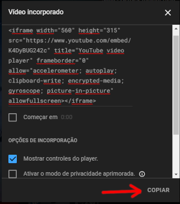
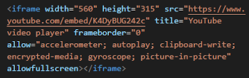
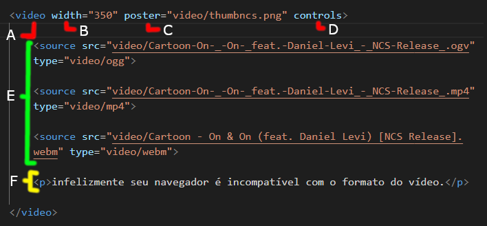

Para colocar vídeos no seu site é bem simples mesmo, mas nós temos duas opções, incorporar os vídeos ou hospedar no próprio site, hospedar no próprio site pode levar ao consumo maior dos dados do site, já que varias pessoas visitarão ele e verão o vídeo, o ideal é incorporar, mas temos desvantagem nisso, quando a gente incorpora o vídeo geralmente é do youtube ou vimeo, o youtube é um serviço gratuito mas pode aparecer propagandas e indicar vídeos de concorrentes, já o vimeo é um serviço pago e você consegue customizar o vídeo que irá ser incorporado e também não tem anúncios.
Aqui eu não irei falar o melhor site, apenas mostrar como incorporar o vídeo ou fazer a própria hospedagem.
Incorporando o vídeo:
Para incorporar o vídeo que você queira é bem simples:
Primeiramente escolha o vídeo.
Escolha a opção incorporar.
Assim que você apertar o botão de incorporar irá aparecer está janela logo abaixo, você pode customizar quando o vídeo começa, os controles e etc... basta apertar em copiar.

Depois só colar na parte onde você queira do seu código, se você quiser, poder customizar ele ao seu gosto Ex: mudar o width(largura), height(altura), borda e etc...

Hospedando vídeo no site:
Apesar de pouco utilizado, saber hospedar um vídeo no próprio site é bem importante, quanto mais conteúdo melhor.
Para hospedar um vídeo no site é relativamente simples, mas ainda temos aquela questão de sempre a compatibilidade, ela é bem importante, porque dependendo do tipo do arquivo o navegador do cliente não irá abrir(lembrando o navegador do cliente nem sempre é mesmo que o seu).
Obviamente temos vários e vários tipos de arquivo, mas se fôssemos colocar todos os tipos de arquivo ficaria imprático, então para resolver esse problema, vamos colocar os tipos mais populares e aceitados nos navegadores mais populares, vou colocar uma lista dos navegadores e os tipos aceitados:
Microsoft Edge → .mp4 .m4v
Apple Safari → .mp4 .m4v
Google Chrome → .mp4 .m4v .webm .ogv
Mozilla Firefox → .webm .ogv
Opera → .webm .ogv
Para colocar hospedar o vídeo no próprio site é até que bem simples:

Essa é a tag responsável pelo vídeo.
Esse parâmetro determina a largura do vídeo, no caso vai regular a altura automaticamente também
Esse parâmetro serve para definir uma capa para o vídeo, no caso o idal é fazer uma capa com o mesmo tamanho que o vídeo se não fica desproporcional
Esse parâmetro é bem importante, ele faz aparecer os controles do vídeo(áudio, play, fullscreen, etc...), mas também tem outros que você pode testar: autoplay, loop, esse nomes já são bem auto explicativos, mas o loop repete o vídeo quando acaba e o autoplay inicia o vídeo automaticamente.
Esses são os vídeos em diferentes formatos, basicamente coloquei os mais utilizados, um jeito fácil de conseguir o vídeo de diversor formatos é utilizando uma ferramenta chamada convertio, lá você consegue converter o formato do vídeo, imagens e até áudios, eles tem extensão no Google Chrome, vale a pena dar uma conferida lá.
Está é uma mensagem caso o usuário use um navegador não compatível aos formatos de vídeo(apesar de bem raro pode ocorrer).
Extra: tem um parâmetro importante que você pode adicionar, ele é o preload="" nele você pode escolher de qual forma o vídeo vai carregar, aqui vai uma lista com os modos possíveis:
auto→ Ele carrega o vídeo inteiro automaticamente, eu não recomendo muito, porque dependendo do tamanho do vídeo isso pode consumir banda do site atoa(já que o usuário não é obrigado a assistir o vídeo) e também pode prejudicar o carregamento do site.
metadata→ Esse carrega apenas as informações como tempo de vídeo e thumb, só irá carregar o vídeo com o clicar do usuário.
none→ Esse daqui já não carrega nada, só carregará o vídeo com o clicar do usuário.